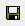

このサンプルでは、Xファンクションビルダを使ってXファンクションを作成することにより、ダイアログ生成の自動化について説明します。Xファンクションビルダはツールメニューで「Xファンクション・ビルダ」を選択すると開きます。
以下のステップはXファンクションの作成手順を示します。今回の例では、1つの列のデータを他の列にコピーするタスクを担うXファンクションを作成します。
2.変数に必要な変更を加えたら、 OXFファイルを保存するボタンをクリックしてXファンクションを保存します。名前を付けて保存ダイアログが開かれたら、保存ボタンをクリックします。
3.では、目的の動作をするためのOrigin Cコードを入力してXファンクションを作成しましょう。コードビルダボタンをクリックします。これはXファンクションをコードビルダで開き、Origin Cコードを入力出来る状態にします。メインの関数に以下のOrigin Cコードを追加します。
ocol = icol;
4.コンパイルボタンをクリックしてからダイアログに戻るをクリックするとXファンクションビルダに戻ります。OXFファイルの保存ボタンをクリックしましょう。
作成したXファンクションをテストしてみます。
Xファンクションが実行されると、ワークシートは3番目の列を追加し、そこに列Aのデータをコピーします。